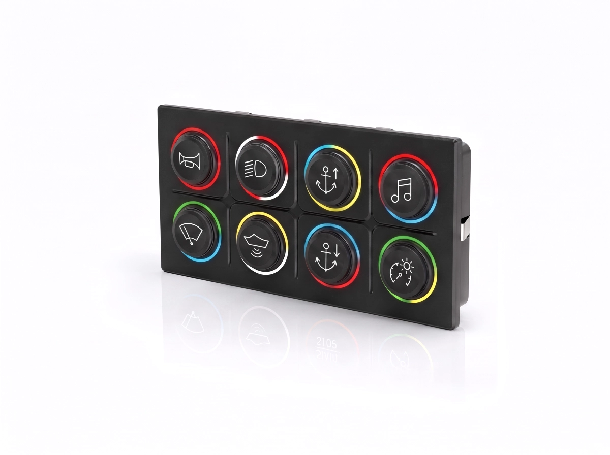
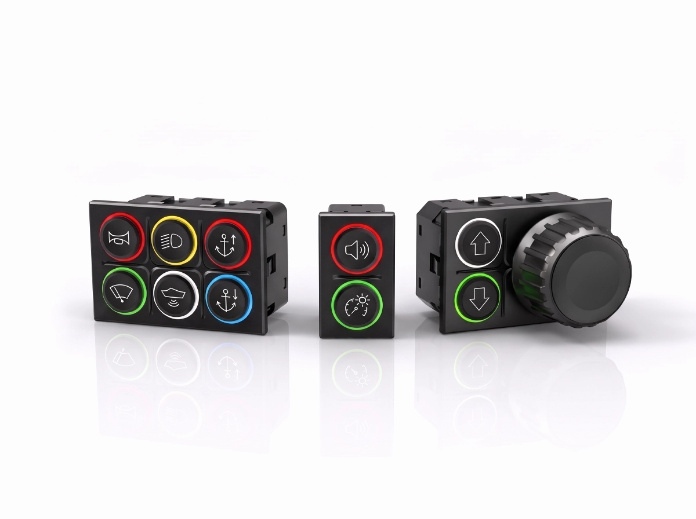
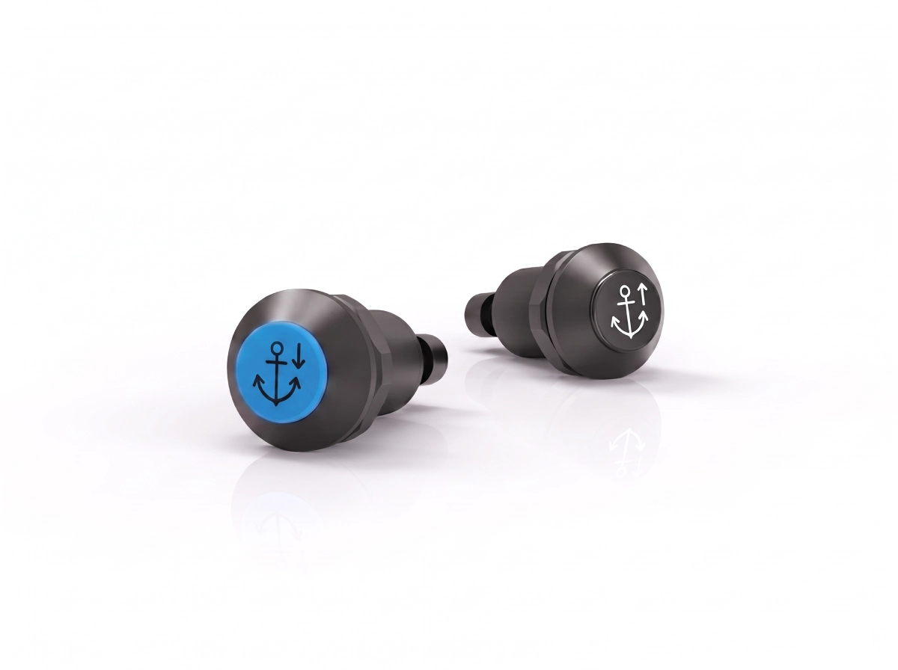
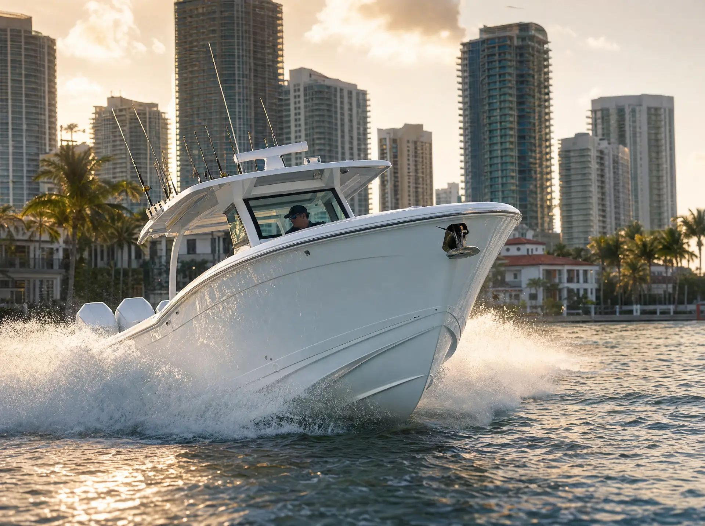
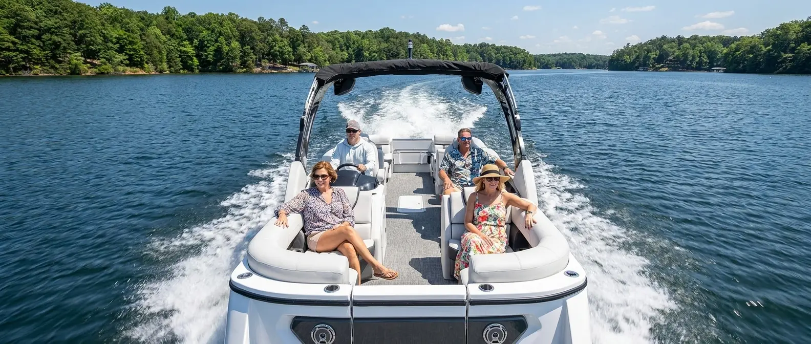
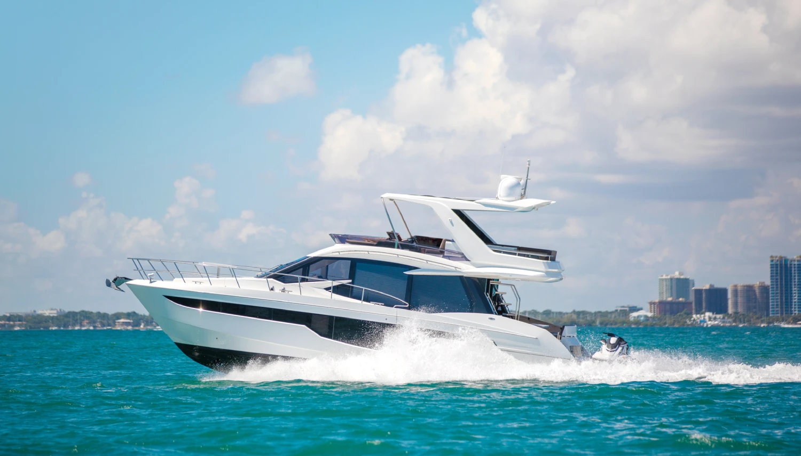
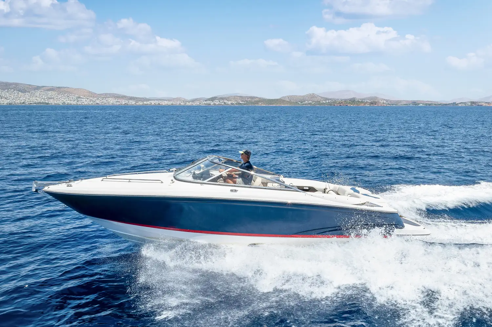
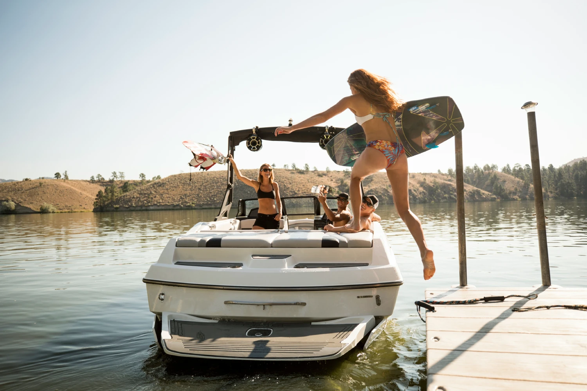
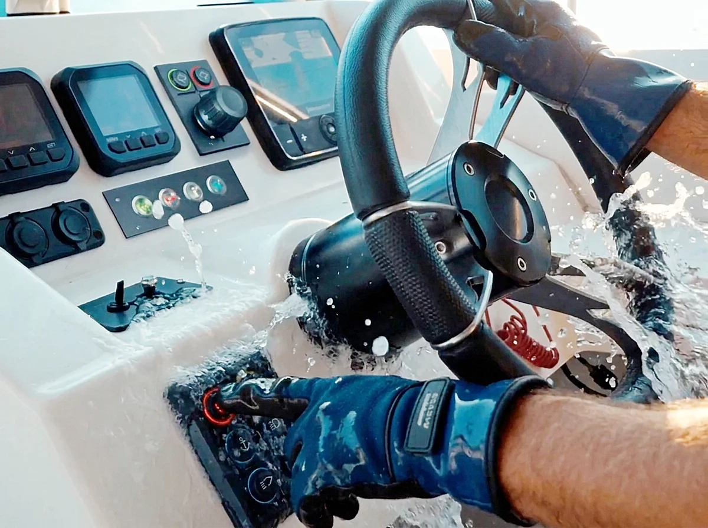

Marine-Ready HMI Control Solutions
Navigate smarter with EAO's Series 09 HMI components. Delivering rugged, intuitive control for demanding marine applications, these fully configurable multifunction devices reduce HMI complexity and costs by combining multiple switch functions into one versatile solution.
Deliver more efficient marine systems with reduced wiring, simplified integration, and greater design flexibility.
Simplify marine system design by reducing components, saving space, and streamlining integration with a multifunction HMI control solution.
Designed to resist water ingress, salt, and harsh marine exposure for dependable operation.
Easily adapt controls, illumination, and interface layouts to meet evolving customer and application requirements.
Recreational boat builders worldwide rely on EAO to deliver premium HMI solutions that enhance comfort, convenience, and confidence on the water. Engineered with rugged materials, customizable controls, and marine-ready durability, EAO products provide reliable performance in sun, spray, and demanding conditions while reducing maintenance, simplifying system integration, and helping boaters spend more time enjoying the journey and less time worrying about their controls.
Bring dependable control to every voyage. Connect with EAO's marine HMI experts.









When critical vessel functions are at stake, reliable control matters. Functional safety helps support safe operation of steering, propulsion, emergency controls, and other safety-related functions, even when faults occur.
Discover EAO HMI solutions with functional safety capabilities for demanding marine applications.
Where EAO's Series 09 controls diverge from typical off-the-shelf boat switch panels.
From individual HMI components and connectivity solutions to fully engineered operator interfaces, EAO can help bring your HMI requirements to life.